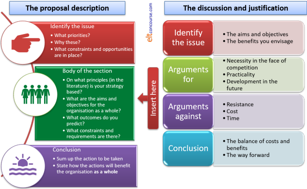

Delta Module Three ELT Management: proposal and justification
|
This part of your essay needs to be linked:
This is not the place simply to set out what you believe will be a useful and important innovation or change but to refer to the evidence you have gathered and the explicit plan you have in mind. An effective way to approach this section of your essay is to imagine (or actually do) a presentation to all your colleagues, setting out what you intend to achieve, what evidence you have so far gathered and how you will implement the changes you propose. The suggested word count for this section is 1,200 words, give or take 10%. |
 |
Questions for you |
This section needs to answer the reader's questions:
- What are your priorities, given the results of the situation analysis and any constraints you have identified?
- How is what you propose influenced by your reading and research?
- What are your objectives?
- What contextual issues affect how you will proceed?
- How will it work in practice?
- What problems may arise and how have you planned to deal with them?
This section of the essay forms the critical link between what you have discovered and how you will implement changes.
This section is all about what is called strategic management and that involves formulating and implementing goals. You need to consider:
- The aims
- The resources you have
- The internal environment
- The competition
This section is about formulating a plan, not about implementing it (that comes next).
Strategy is a polysemous word and can refer to:
- Strategy as plan:
This is what you are concerned with here. - Strategy as pattern:
In other words, has the strategy emerged over the years and become an accepted if not often critically examined part of the organisation? - Strategy as position:
Where in the market are you as an organisation and, more importantly, where do you want to be?
We'll take the questions one at a time and suggest how you might answer them.
- What are your priorities, given the results of the situation analysis and any constraints you have identified?
- You must link the outcomes of your situation analysis quite
explicitly at the outset. This is where you reiterate the
priorities you have identified and make it clear how you have
arrived at the judgement that they are the key factors to address.
Here, too, you must consider what is practical for your organisation
in terms of time and other resources, not least financial ones.
This section calls for a short discussion setting out the issue, the advantages and disadvantages and supplying a personal coda stating how you feel the balance has been struck. All change can have negative effects and you need to anticipate what they are in the plan. - How is what you propose influenced by your reading and research?
- Here you need to link your reading to your proposal. What
are the key texts and ideas concerning strategic management and how
are they related to what you propose? In other words, what
theoretical underpinning does all this have?
Do not be tempted here to supply just a list of factors from your reading. You need to show how the factors have influenced your proposal. - What are your objectives?
- What problems have you identified?
What effect are these problems having on the way your organisation functions?
How do you hope to alleviate the problems and solve the issues?
Crucially, how will the organisation and its stakeholders benefit?
You may, for example, anticipate a certain reluctance to accept change or commit resources. How will you counter these concerns? - What contextual issues affect how you will proceed?
- What outcomes will there be?
How will they affect individuals and departments?
How will this work in practice?
Who will be affected?
How drastically?
How much can you rely on cooperation and how much will require leadership and direction?
Consider all stakeholders here, not just the people who are employed by the organisation.
How much time will be required?
Do not dwell here on details. Look strategically and decide how the proposed change will contribute to the organisation's strengths. - How will it work in practice?
- Who will be affected?
What will be disrupted?
What new resources will you need?
This refers forwards to the next section on implementation but needs to be considered, albeit briefly, here. - What problems may arise and how have you planned to deal with them?
- Do you envisage any resistance?
Will the proposal have a negative effect on anyone?
What will you do about this?
Are there financial or other (e.g., time) considerations?
Where is the cost-benefit analysis?
This section carries 35% of the total marks for the essay so do not
skimp. Remain clearly focused, draw on reading and research and be rational and objective.
Above all, maintain a certain distance and a holistic view. The
reader does not want to know how this particular innovation will help
this or that member of staff or group of clients. What the reader
does want to know is how this innovation will impact
the organisation's effectiveness and success.
 |
Writing the proposal sections for Module Three ELT Management |
In your report, you will have to describe and justify your proposal.
The two go hand in hand. Each part of your proposal should be
linked to a clear justification.
If, for example, your proposal for a marketing strategy involves the
development of a new website for the organisation, you need to show how
this is justified from the data you gathered in the situation analysis
and how it will positively impact the business.
If, on the other hand, your proposal concerns enhancing the language
skills of the administrational staff, you need to show how and to what
extent you believe better language skills will benefit the organisation
as a whole.
If you have followed the guide to structuring the whole of Module Three, you will know how that works but here's the overview

The content will depend on the type of innovation and change that you propose.
 |
Avoid the obvious errors |
Examiners' reports contain more or less the same catalogue of
weaknesses year after year so be careful to avoid any of the
following being levelled at your proposal and justification.
For this section, the most frequently cited problems are:
- a failure to link the proposal to the data so far gathered
- Make sure you draw on the situation analysis quite explicitly and show that you understand the implications
- a failure to link theory and practice
- Refer to the literature concerning strategic management and make it clear that the term strategy may have different meanings in different contexts
- a failure to consider constraints and
requirement
- Do not get too enthusiastic. All plans need to be written in the light of what is possible, what is affordable and what is acceptable. This is not an exercise in wishful thinking.
Test yourself on the contents of this guide.
| The Module Three ELT Management areas: | |||
| Choosing the topic | Writing the essay | The introduction | Situation analysis |
| Proposal | Implementation | Reading list | Before you submit |